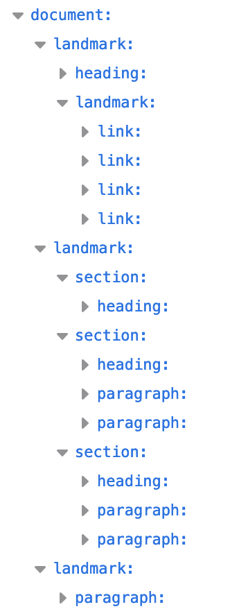
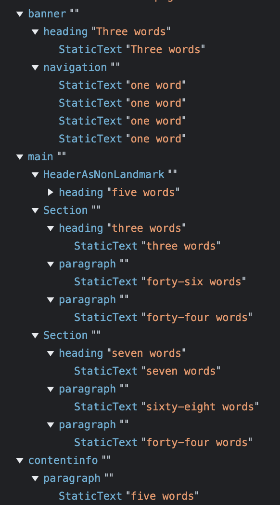

HTML semántico
Con más de 100 elementos HTML y la posibilidad de crear
elementos personalizados, hay infinitas maneras de marcar tu
contenido. pero algunas maneras, particularmente
semánticamente, son mejores que otras.
Semántico significa "relacionado con el significado".
Escribir código HTML semántico consiste en utilizar
elementos HTML para estructurar el contenido según el
significado de cada elemento, no su apariencia.
Esta serie todavía no abarca muchos elementos HTML, pero
incluso sin conocer HTML, los siguientes dos fragmentos de
código muestran cómo el lenguaje de marcado semántico puede
proporcionar contexto al contenido. Ambos usan un recuento
de palabras en lugar de ipsum lorem para ahorrar algo de
desplazamiento. Usa la imaginación para expandir
"treinta palabras" en 30 palabras:
El primer fragmento de código usa <div> y
<span>, dos elementos sin valor semántico.
<div>
<span>Three words</span>
<div>
<a>one word</a>
<a>one word</a>
<a>one word</a>
<a>one word</a>
</div>
</div>
<div>
<div>
<div>five words</div>
</div>
<div>
<div>three words</div>
<div>forty-six words</div>
<div>forty-four words</div>
</div>
<div>
<div>seven words</div>
<div>sixty-eight words</div>
<div>forty-four words</div>
</div>
</div>
<div>
<span>five words</span>
</div>
¿Tienes una idea de a qué se expanden esas palabras? En
realidad, no.
Reescribiremos este código con elementos semánticos:
<header>
<h1>Three words</h1>
<nav>
<a>one word</a>
<a>one word</a>
<a>one word</a>
<a>one word</a>
</nav>
</header>
<main>
<header>
<h1>five words</h1>
</header>
<section>
<h2>three words</h2>
<p>forty-six words</p>
<p>forty-four words</p>
</section>
<section>
<h>>seven words</h2>
<p>sixty-eight words</p>
<p>forty-four words</p>
</section>
</main>
<footer>
<p>five words</p><
</footer>
¿Qué bloque de código tenía un significado? Si usas solo los
elementos no semánticos de <div> y <span>,
realmente no
puedes saber qué representa el contenido en el
primer bloque de código. El segundo ejemplo de
código, con elementos semánticos, proporciona
suficiente contexto para que una persona que no usa
un codificador descifra el propósito y el
significado sin haber encontrado nunca una etiqueta
HTML. Definitivamente, proporciona suficiente
contexto para que el desarrollador comprenda el
esquema de la página, incluso si no entiende el
contenido, como el contenido en un idioma
extranjero.
En el segundo bloque de código, podemos comprender
la arquitectura incluso sin comprender el contenido
porque los elementos semánticos proporcionan
significado y estructura. Puedes ver que el primer
encabezado es el banner del sitio, y es probable que
<h1> sea el nombre del sitio. El pie de página es el
pie de página del sitio. Las cinco palabras
pueden ser una declaración de derechos de autor
o la dirección de la empresa.
El lenguaje de marcado semántico no solo hace
que el lenguaje de marcado sea más fácil de leer
para los desarrolladores. es importante para
ayudar a las herramientas automatizadas a
descifrar el lenguaje de marcado. Las
herramientas para desarrolladores también
demuestran cómo los elementos semánticos
proporcionan una estructura legible por máquina.
Modelo de objetos de accesibilidad (AOM)
A medida que el navegador analiza el contenido recibido,
crea el modelo de objetos del documento (DOM) y el modelo de
objetos CSS (CSSOM). Luego, también crea un árbol de
accesibilidad. Los dispositivos de asistencia, como los
lectores de pantalla, usan la AOM para interpretar y
analizar contenido. El DOM es un árbol de todos los nodos
del documento. El AOM es como una versión semántica del DOM.
Comparemos cómo se procesan las dos estructuras de
documentos en el panel de accesibilidad de Firefox:
Figura 1: Una lista de nodos que son todos vínculos o texto.
Figura 2: Es una lista de nodos con puntos de referencia claros.
En la figura 2, hay cuatro roles de puntos de referencia en
el segundo bloque de código. Usa puntos de referencia
semánticos que se denominan convenientemente <header>,
<main>, <footer> y <nav> para
"navegación". Los puntos
de referencia proporcionan una estructura al
contenido web y garantizan que los usuarios
de lectores de pantalla puedan navegar por
secciones importantes de contenido con el
teclado.
Ten en cuenta que <header> y <footer> son
puntos de referencia, con los roles
de banner y contentinfo
respectivamente, cuando no están
anidados en otros puntos de
referencia. La AOM de Chrome muestra
esto de la siguiente manera:
Figura 3: El primer fragmento de código.
Figura 4: El segundo fragmento de código.
Si observas las herramientas para desarrolladores de Chrome,
notarás una diferencia significativa entre el modelo de
objetos de accesibilidad cuando se usan elementos semánticos
y cuando no lo haces.
Es bastante claro que el uso de elementos semánticos ayuda a
la accesibilidad, y el uso de elementos no semánticos reduce
la accesibilidad. HTML es generalmente accesible, de forma
predeterminada. Nuestro trabajo como desarrolladores es
proteger la naturaleza accesible de forma predeterminada del
HTML y asegurarnos de maximizar la accesibilidad para
nuestros usuarios. Puedes inspeccionar
la AOM en las herramientas para desarrolladores.
El atributo role
El atributo role describe el rol que tiene un elemento en el
contexto del documento. El atributo role es un atributo
global (es decir, es válido para todos los elementos)
definido por la especificación
de ARIA en lugar de la especificación
de HTML de QUÉWG, donde casi todo lo demás de esta
serie está definido.
Cada elemento semántico tiene un rol implícito, algunos
según el contexto. Como vimos en la captura de pantalla de
las herramientas para desarrolladores de accesibilidad de
Firefox, los de nivel superior <header>, <main>,
<footer> y
<nav> eran puntos de referencia, mientras que
<header> anidada en <main> era una sección.
La captura de pantalla de Chrome
muestra los elementos Roles
de ARIA: <main> es main, <nav> es
navigation y
<footer>, como era el pie de página del documento,
es contentinfo. Cuando <header> es el encabezado
del documento, el rol predeterminado es
banner, que define la sección como el
encabezado global del sitio. Cuando un
elemento <header> o <footer> está anidado
dentro de un elemento de
seccionamiento, no es un rol de
punto de referencia. Ambas
herramientas para desarrolladores
las capturas de pantalla lo
muestran.
Los nombres de los roles de los
elementos son importantes para crear
el AOM. La semántica de un elemento,
o "rol", es importante para las
tecnologías de asistencia y, en
algunos casos, para los motores de
búsqueda. Los usuarios de tecnología
de accesibilidad dependen de la
semántica para navegar por el
contenido y comprender su
significado. El rol del elemento
permite al usuario acceder al
contenido que busca con rapidez y,
posiblemente, lo que es más
importante, el rol informa al
usuario del lector de pantalla cómo
interactuar con un elemento
interactivo una vez que está
enfocado.
Los elementos interactivos, como
botones, vínculos, rangos y casillas
de verificación, tienen roles
implícitos, se agregan
automáticamente a la secuencia de
pestañas del teclado y todos tienen
compatibilidad predeterminada con
las acciones del usuario esperadas.
El rol implícito o el valor role
explícito le informan al usuario que
debe esperar interacciones
predeterminadas específicas del
elemento.
Con el atributo role, puedes asignar
un rol a cualquier elemento,
incluido un rol diferente del que
implica la etiqueta. Por ejemplo,
<button> tiene la función implícita
de button. Con role="button",
puedes convertir cualquier
elemento de manera semántica en
un botón: <p role="button">Click
Me</p>.
Si bien agregar role="button" a
un elemento informará a los
lectores de pantalla que el
elemento es un botón, no cambia
su apariencia ni funcionalidad.
El elemento button proporciona
muchas funciones sin que tengas
que realizar ningún trabajo. El
elemento button se agrega
automáticamente a la secuencia
de orden de pestañas del
documento, lo que significa que,
de forma predeterminada, es
enfocable con el teclado. Con
las teclas Intro y Espacio, se
activa el botón. Los botones
también tienen todos los métodos
y las propiedades que se les
proporcionaron mediante la
interfaz HTMLButtonElement. Si
no usas el botón semántico para
tu botón, debes volver a
programar todas esas funciones.
Ahora es mucho más fácil usar
<button>.
Regresa a la captura de
pantalla del AOM para el
bloque de código no
semántico. Notarás que los
elementos no semánticos no
tienen roles implícitos.
Podemos hacer que la versión
no semántica sea semántica
mediante la asignación de un
rol a cada elemento:
<div role="banner">
<span role="heading" aria-level="1">Three words</span>
<div role="navigation">
>a>one word</a>
<a>one word</a>
<a>one word</a>
<a>one word</a>
</div>
</div>
Si bien el atributo role se puede usar para agregar semántica a cualquier elemento, en su lugar, debes usar elementos con el rol implícito que necesitas.
Elementos semánticos
Pregúntate: “¿Qué elemento representa mejor la función de
esta sección del lenguaje de marcado?” generalmente te
llevarán a elegir el mejor elemento para el trabajo. El
elemento que elijas (y, por lo tanto, las etiquetas que
uses) deben ser adecuados para el contenido que muestras, ya
que las etiquetas tienen un significado semántico.
Se debe usar HTML para estructurar el contenido, no para
definir su apariencia. La apariencia es el dominio de CSS.
Si bien algunos elementos se definen para que aparezcan de
cierta manera, no uses un elemento en función de cómo la
hoja de estilo del usuario-agente hace que ese elemento
aparezca de forma predeterminada. En su lugar, selecciona
cada elemento según el significado semántico y la
funcionalidad del elemento. Programar HTML de forma lógica,
semántica y significativa ayuda a garantizar que se aplique
CSS según lo previsto.
Si eliges los elementos correctos para el trabajo a medida
que escribes la codificación, no tendrás que refactorizar ni
comentar tu código HTML. Si piensas en usar el elemento
correcto para el trabajo, la mayoría de las veces elegirás
el elemento correcto para el trabajo. Si no es así,
probablemente no lo harás. Cuando entiendes la semántica de
cada elemento y sabes por qué es importante elegir el
elemento correcto, por lo general, podrás tomar la elección
correcta sin mucho esfuerzo adicional.